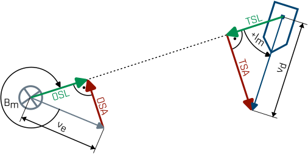

WO-Trainer Uboote HILFE
Wie bereits im Kapitel der Quergeschwindigkeiten erklärt, ist die Längsgeschwindigkeit die Komponente des Fahrtvektors, entlang der Peilung zwischen zwei Fahrzeugen.

Abbildung 1: Graphische Darstellung der Längsgeschwindigkeit (grün) und der Quergeschwindigkeit (rot) zwischen dem Eigenboot (grau) und einem Gegner (blau). Unsere eigene Längsgeschwindigkeit ist die OSL. Die Quergeschwindigkeit des Gegners ist die TSL.
Die Längsgeschwindigkeit wird immer dann bestimmt, wenn wir eine Aussage über den $\mathrm{t_{CPA}}$ treffen wollen.